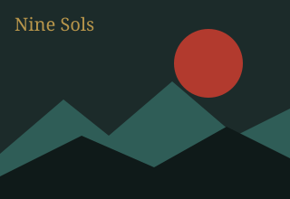
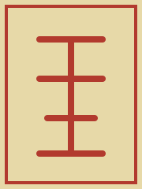
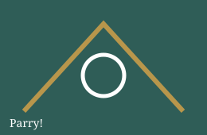

Содержание
Об игре

Nine Sols — двухмерный экшен-платформер в духе метроидвании. Игра выросла из тайваньской студии Red Candle Games и выделяется необычным сеттингом — «таопанком»: восточная философия и мифология встречаются с научной фантастикой.
Главный герой — Йи, и ему предстоит выследить девятерых правителей — Солов. Бои строятся вокруг парирования: чтобы победить, нужно читать атаки врага и отвечать вовремя.
Что меня зацепило
Эта игра запомнилась мне атмосферой, музыкой и боевой системой. Я прошёл много игр жанра, и Nine Sols остаётся для меня одной из лучших.
Факты об игре
| Параметр | Значение |
|---|---|
| Разработчик | Red Candle Games |
| Жанр | Метроидвания, экшен-платформер |
| Сеттинг | Таопанк |
| Платформа | ПК (Steam) |
| Мой статус | Пройдена |
Почему она мне нравится
Боевая система
Парирование и контратаки делают каждый бой похожим на танец.

Мир и музыка
Локации выглядят цельно, а музыка подчёркивает настроение каждой зоны. Здесь можно написать свои впечатления: чем больше текста, тем лучше выглядит страница.
Сюжет
История держит интригу до самого конца, поэтому спойлеры на сайте я не размещаю.

Скрипты на странице
Цвет фона
Дата
Часы тикают в заголовке вкладки браузера.